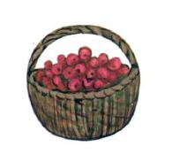

Сказки про зверей
Поросёнок
В одном обычном деревенском дворе жил совсем не обычный поросёнок. С виду он был как все: маленький, розовый, с весело закрученным хвостиком и милым пятачком. Но это был очень аккуратный поросёнок. Его шёрстка была розовая, чистенькая, потому что он каждый день умывался. Кушать поросёнок умел так, что не проливал ни капли, а когда ходил гулять, то обходил все лужи, чтобы не запачкаться. Но этого никто не замечал, ведь все привыкли думать, что поросята — грязнули. Он то и дело слышал, как собака говорила своему щенку: «Ты ешь, как поросёнок! Опять перевернул миску!» А курица кричала на цыплят: «Не лезьте в лужу, а то будете грязными, как поросята!» И что самое обидное: так думали все обитатели двора.
Но однажды хозяин привёл новую корову. Она была очень важная и солидная. Корова медленно обходила весь двор, оглядывая его жителей. Все хотели, чтобы она обратила на них внимание. Когда корова подошла к поросёнку, она вдруг остановилась и посмотрела на него своими большими удивлёнными глазами: «Му-у-у, какой чистый и опрятный поросёнок. Никогда таких не встречала. Познакомьте меня с вашей мамой, м-м-может, мы подружимся...»
Поросёнок так и обомлел от неожиданности. Он увидел, что все удивлённо смотрят на него. Поросёнок смутился и убежал в сарай. Он сидел там и обдумывал случившееся, когда услышал, как собака строго говорит щенку: «Ты такой грязнуля, что с тобой стыдно выйти на улицу. Вот когда научишься кушать аккуратно, как наш поросенок, тогда и пойдём гулять!»
И тут маленький поросёнок понял, что настал самый счастливый день в его жизни.

Утёнок
Водном заболоченном пруду жила утка со своими утятами. А рядом на осине свила гнездо воробьиная семья. Мама-утка и мама-воробьиха целыми днями хлопотали, чтобы прокормить своих птенцов и научить всему, что необходимо в жизни.
Дети быстро подрастали. Воробышки уже начинали понемножку летать. А утята больше всего любили плавать. Это у них получалось очень здорово. И только один утёнок не хотел окунуться. Честно говоря, он просто боялся нырнуть в холодную воду. Сначала мама-утка уговаривала его попробовать, а потом стала сердиться. «Ты позоришь нашу семью, все нормальные утки прекрасно плавают», — говорила она. А братики и сестрички дразнили его трусишкой. Это было так обидно! И всё же утёнок никак не мог преодолеть свой страх.
Однажды, когда он сидел на кочке и грелся на солнышке, маленький воробышек выбрался из гнезда и стал летать и перепрыгивать с кочки на кочку. Но его крылышки были ещё очень слабыми. Воробьишка не удержался и упал в воду. Он стал захлёбываться и тонуть. И тогда утёнок вскочил с места, прыгнул в воду и быстро-быстро поплыл к воробью. Он схватил бедного птенца клювом за перышки и вытащил на кочку, а сам упал рядом, задыхаясь от усталости. Когда воробышек оправился от страха, он сказал:
— Какой ты смелый, утёнок. Я и не знал, что ты так здорово умеешь плавать!
— Я и сам не знал, — ответил утёнок и улыбнулся.
Ёжик
Жил да был ёжик. Обыкновенный: маленький, серый, колючий. А ещё он был невесёлым, потому что жил совсем один. Не было у ёжика ни родных, ни друзей. Воспитал его старый дедушка ёж, который наказал внуку твёрдо помнить несколько правил. Первое: надо самому о себе заботиться и ни на кого не рассчитывать. Второе: нельзя тратить время попусту. И третье: никому ты — серый да колючий — не нужен.
Вот по этим правилам ёжик и жил. Он не играл с другими зверями и не ходил в гости. С соседями беседовал только по делу. И по лесу просто так не гулял — ведь надо было о себе заботиться. Ёжик знал, что после тёплого лета и богатой плодами осени наступит холодная снежная зима. А зимой самое страшное — остаться без еды. Поэтому всё свободное время он тратил на то, чтобы сделать побольше запасов. Ёжик научился лучше всех в лесу собирать грибы и ягоды, находя их даже в самых укромных уголках.
Дома он высушивал их на ниточке и складывал на полки. Иногда приносил дикие яблоки из старого сада, пшеничные зёрнышки с поля. Запасы увеличивались с каждым днём. И вот однажды ёжик с удивлением обнаружил, что его кладовая полна. «Теперь-то я не пропаду зимой», — подумал он. Но на всякий случай решил сделать запасы ещё и в комнате. На это ушло немного времени и скоро стало ясно — больше ничего запасать не нужно, да и хранить негде.
«Чем же теперь заниматься?» — размышлял ёжик. Он стал перебирать свои богатства и подсчитывать их, но вскоре ему стало ужасно скучно. И тогда ёжик отправился гулять.
Это было очень странно — идти по лесу без всякого дела. Ёжик с интересом рассматривал яркие цветы, пёстрых бабочек и разнообразных жучков, слушал пение птиц и стрекот кузнечиков. «Что ж, гулять, оказывается, приятно», — размышлял он, идя всё дальше по тропинке. И вдруг ёжик увидел старую белку, сидящую на ветке огромной ели.
— Добрый день, — вежливо поздоровался ёжик.
— А разве он добрый? — грустно спросила белка.
— У вас что-то случилось?
— Случилось? Пожалуй, нет. Просто пришла старость.
— Это плохо? — спросил ёжик.
— Хорошего мало. Я не могу уже прыгать по ветвям, собирая орехи. Да и грызть их уже трудно. Грибы собирать тоже тяжело, ведь я плохо вижу. Вот и думаю, что скоро наступит зима, и, видно, придётся мне голодать.
Ёжик был поражён, он никогда не задумывался, что кому-то может быть тяжело то, что он делал без всяких усилий.
— Вы не должны так грустить, я попробую вам помочь, — сказал он белке.
Ёжик побежал домой, взял корзинку и отправился в ельник. Он знал, что там всегда можно найти крепкие боровички. И действительно, к вечеру корзинка была полна. На обратном пути ёжик собрал ещё немного спелой черники.
Старая белка всё так же грустно сидела на своём месте.
— Вот, это вам, — сказал ёжик.
— Мне? — удивилась белка. — Но это же целое богатство!
— Ну что вы, это всего лишь корзинка грибов, — улыбнулся ёжик.
— Да нет, малыш. Для меня это не просто корзинка грибов. Ты спас меня от голода и от грустных мыслей о том, что старики никому не нужны.
И ёжик увидел, как из глаз белки покатились слезинки.
—Я не хочу, чтобы вы плакали, — сказал он. — Завтра я снова приду к вам.
— Приходи. Я буду очень тебя ждать.
Ёжик шёл по тропинке, он был очень взволнован. Впервые вжизни он узнал, что может быть нужен кому-то, что его ждут. Это было так неожиданно и так радостно! Когда ежик уже подходил к дому, он увидел соседку-зайчиху.
Она была чем-то очень обеспокоена.
— Добрый вечер, — поздоровался ёжик, — у вас что-то произошло?
— Да, вчера я видела неподалёку волка, и теперь боюсь отойти далеко и оставить зайчат одних. Но они хотят есть, а мне совсем нечем их кормить.
— Нечем кормить? — ёжик был поражён. — У вас нет дома припасов?
— Какие тут припасы! Когда так много маленьких детей, некогда ходить по лесу, я с трудом нахожу еду на каждый день, чтобы их покормить!
Ёжик побежал домой и принёс зайчихе лукошко ягод и несколько спелых яблок, которые легко уместились у него на спинке.
— Вот, возьмите и накормите зайчат. Сейчас уже поздно, чтобы идти в лес. А завтра я смогу принести вам больше.
— Ты просто так хочешь нам это отдать? — удивилась зайчиха.
Она привыкла видеть ёжика всегда таким серьёзным и необщительным. Звери даже думали, что он скуповат.
— Конечно, ведь мне совсем не трудно собирать ягоды, грибы и другие вкусные вещи.
— Зайди к нам в гости, — пригласила зайчиха.
Ёжик зашёл в маленький домик. Там было шестеро крохотных зайчат — милых, пушистых, доверчивых. Сначала они немного испугались его колючих иголок, но потом быстро освоились. Вечер пролетел незаметно, так как было очень, весело. Особенно ёжику, ведь он впервые был в гостях у друзей!
Наутро ёжик, как обычно, отправился с корзинкой в лес. Теперь он трудился усерднее, чем всегда. Оказалось, что заботиться о ком-то очень приятно. Когда он принёс грибы старой белке, та уже ждала его. Она приготовила душистый травяной чай. Белка долго жила на свете и знала множество удивительных историй. Ёжику было так интересно их слушать! Потом он сходил в сад за яблоками для зайчат, и они снова весело играли целый вечер.
Теперь жизнь ёжика совсем переменилась. У него появились друзья, он с радостью помогал им. А они тоже старались порадовать своего колючего приятеля. Белка рассказывала ему сказки, учила различать лесные приметы. Она очень полюбила маленького ёжика! Зайчиха старалась к его приходу приготовить вкусный обед, а зайчата придумывали всё новые игры.
Вскоре ёжик познакомился с сорокой, у которой было ранено крыло, и стал приносить ей хлебные зёрнышки. В лесу оказалось много жителей, которые нуждались в помощи. И теперь у ёжика было столько дел, что ему иногда даже не хватало времени. Но зато он никогда не скучал и не грустил, ёжик открыл много новых важных правил. Он понял, что когда заботишься только о себе, это не приносит радости. Ещё ёжик узнал, что делать добро очень приятно, а главное — каждому так необходимо, чтобы его любили.
